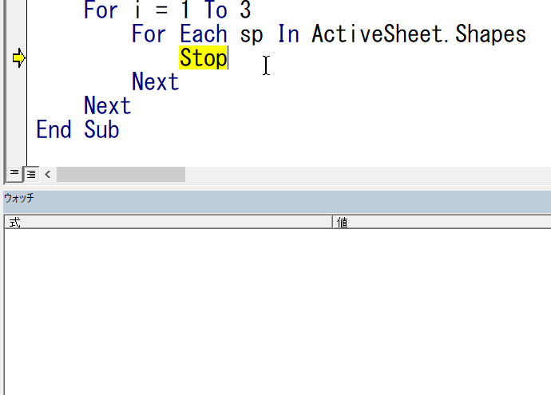

オブジェクトの探索方法（オートシェイプのTextを探して）
VBAを書き進めて行くと、どうしてもオブジェクトの扱い時に分からないことがでてきます、
何が分からないかというと、オブジェクトの中の目的の要素をどのように指定したら良いのかということです、
オブジェクトの中を調べて、目的の要素にたどり着く方法を説明します。
イミディエイトウィンドウ、オブジェクトブラウザー、ヘルプも使います。
こちら見てください。
オブジェクト探索の説明で使う例題
オートシェイプで、四角の中にテキストを書きました。
以下のように並べるという事です。
Sub sample()
Dim i As Long
Dim sp As Shape
Dim posTop As Single
For i = 1 To 3
For Each sp In ActiveSheet.Shapes
If sp.TextFrame.Characters.Text = "TEST" & i Then
sp.Top = posTop
sp.Left = 0
posTop = posTop + sp.Height
End If
Next
Next
End Sub
もちろん、VBAの書き方はいろいろありますが、
いずれにしろ、たったこれだけです。
このようなオートシェイプをVBAで扱ったことが無いと、なにやら分からないことだらけではないでしょうか。
・オートシェイプを動かすには
・オートシェイプの文字を取得するには
分からないことだらけで、最初から、どうしたらよいのか途方に暮れます。
自動記録を使ってオートシェイプの概要を知る
Sub Macro1()
'
' Macro1 Macro
'
'
ActiveSheet.Shapes.Range(Array("Rectangle 2")).Select
Selection.ShapeRange.IncrementLeft -165
Selection.ShapeRange.IncrementTop -57
End Sub
まず目にとまるのは、
Shapes
オートシェイプのオブジェクトらしいという事です。
このくらいの想像力はVBAをやるなら必要ですね。
そして、複数系なのでコレクションであろうことも理解してください。
Shapes以外は無視しましょう。
ShapeRangeやIncrementは、ちょっと想像しづらいですからひとまず置いときましょう。。
ExcelマクロVBA入門
コレクションについては、
第58回.コレクションとは
つまり、オートシェイプは、
Shapeオブジェクトであり、Shapesコレクションに含まれるという事ですね。
ここまで分かると、以下のコードが書けます。
Sub sample()
Dim i As Long
Dim sp As Shape
Dim posTop As Single
For i = 1 To 3
For Each sp In ActiveSheet.Shapes
Next
Next
End Sub
ローカルウィンドウでオートシェイプのテキストを調べる
問題は、オートシェイプのテキストをどのように取得するかです。
Stopを入れて、停止させてみましょう。
それでは、VBAを終了させて、あらためて自動記録でテキストを変更してみましょう。
"TEXT1"を"TEXT11"に変更してみます。
Sub Macro2()
'
' Macro2 Macro
'
'
ActiveSheet.Shapes.Range(Array("Rectangle 2")).Select
Selection.ShapeRange(1).TextFrame2.TextRange.Characters.Text = "TEST11"
With Selection.ShapeRange(1).TextFrame2.TextRange.Characters(1, 6). _
ParagraphFormat
.FirstLineIndent = 0
.Alignment = msoAlignLeft
End With
With Selection.ShapeRange(1).TextFrame2.TextRange.Characters(1, 6).Font
.NameComplexScript = "+mn-cs"
.NameFarEast = "+mn-ea"
.Fill.Visible = msoTrue
.Fill.ForeColor.ObjectThemeColor = msoThemeColorLight1
.Fill.ForeColor.TintAndShade = 0
.Fill.ForeColor.Brightness = 0
.Fill.Transparency = 0
.Fill.Solid
.Size = 18
.Name = "+mn-lt"
End With
Range("A1").Select
End Sub
"TEST11"と書かれている行をみてみると、
Selection.ShapeRange(1).TextFrame2.TextRange.Characters.Text = "TEST11"
何やら、
TextFrame2
TextRange
Characters
順に適当に和訳して、まずは適当に解釈して見当をつけます。
テキスト枠
テキスト範囲
文字列
いちいち全てを調べていたのでは、時間がいくらあっても足りません。
ShapeRangeはオートシェイプの集まり、つまりは、Shapesと同じようなものではないかと、
なので、無視して次へ（ここで気になる場合はググって調べましょう）
TextFrame2ここに核心のテキストがはいっていそうだと、このように目星をつけます。
最初のsampleを実行して、ローカルウィンドウでspの中を探してみましょう。
TextRangeがありました、これをさらに展開すると、
つまり、
イミディエイトウィンドウで確かめてみると、
このTextを文字列を判定すれば出来そうですね。
オートシェイプの位置移動について
最初の自動記録では、
Selection.ShapeRange.IncrementTop -57
ここは、慣れと事前知識が必要かもしれません。
Incrementなので、場所を特定しているのではなく、現在位置からの移動量を指定しているのだろうと推測できるのです。
IncrementLeftで左位置の移動、IncrementTopで上位置の移動
移動量だからIncrementが付く、だったらIncrementを付けずに、Left、Topでよくねー・・・
のようなノリで調べてみると良いでしょう。
ローカルウィンドウでspの中を探してみましょう。
しかも数値をみれば、絶対位置であることも想像できるでしょう。
ここまで調べたら、ヘルプ（MSのVBAリファレンス）も使いましょう。
「vba shape top」このような感じでぐぐってみると良いでしょう。
VBAを完成させる
Sub sample()
Dim i As Long
Dim sp As Shape
Dim posTop As Single
For i = 1 To 3
For Each sp In ActiveSheet.Shapes
If sp.TextFrame2.TextRange.Text = "TEST" & i Then
sp.Top = posTop
sp.Left = 0
posTop = posTop + sp.Height
End If
Next
Next
End Sub
あれれ、最初のVBAコードと何やら少し違う・・・
If sp.TextFrame.Characters.Text = "TEST" & i Then
最後のコードは、
If sp.TextFrame2.TextRange.Text = "TEST" & i Then
TextFrame2は、Excel2007で追加されたプロパティで、
TextFrameは、それ以前からあるプロパティです。
どちらでも、結果は同じです。
オブジェクトブラウザーを使いさらにオブジェクトを調べる
sp.TextFrame.Characters.Text
このコードにはどのようにたどり着いたら良いでしょうか。
ローカルウィンドウの使い方
こちらに書きましたが、ローカルウィンドウのメンバーにはすべてが表示されているわけではありません。
そこで、
オブジェクトブラウザー(F2)を見てみましょう。
Characters
これっぽいですよね、
慣れてくれば、VBEのインテリセンス（候補表示）で見つけられるようになり、
さらに、その下の.Textも簡単に見つけられます。
そんな時は、判明したオブジェクトを一旦オブジェクト変数にいれて、ローカルウィンドウを見ます。
大抵はプロパティ名と同じですが、調べるだけなのでObjectで十分でしょう。
Fontもありますね。
Captionにも同じ"TEST2"がありますが、今回の場合はTextでよいでしょう。
これがあれば何も要らない。
ウォッチウィンドウについて

同じテーマ「マクロVBA技術解説」の記事
文字種（ひらがな、全半角カタカナ、半角英大文字等々）の判定
オブジェクトとプロパティの真実
オブジェクト式について
オブジェクトの探索方法（オートシェイプのTextを探して）
条件付きコンパイル（32ビット64ビットの互換性）
ドキュメントプロパティ（BuiltinDocumentProperties,CustomDocumentProperties）
VBAでファイルを既定のアプリで開く方法
Excelアドインの作成と登録について
VBAでのタイマー処理（SetTimer,OnTime）
マクロでShift_JIS文字コードか判定する
Byte配列と文字コード関数について
新着記事NEW ・・・新着記事一覧を見る
VBA100本ノック 100本目：WEBから100本ノックのリストを取得｜VBA練習問題（3月3日）
VBA100本ノック 99本目：自動席替え（行列と前後左右が全て違うように）｜VBA練習問題（3月2日）
VBA100本ノック 98本目：席替えルールが守られているか確認｜VBA練習問題（3月1日）
VBA100本ノック 97本目：Accessデータを取得（グループ集計）｜VBA練習問題（2月27日）
VBA100本ノック 96本目：Accessデータを取得（マスタ結合&抽出）｜VBA練習問題（2月26日）
VBA100本ノック 95本目：図形のテキストを検索するフォーム作成｜VBA練習問題（2月24日）
VBA100本ノック 94本目：表範囲からHTMLのtableタグを作成｜VBA練習問題（2月23日）
VBA100本ノック 93本目：複数ブックを連結して再分割｜VBA練習問題（2月22日）
VBA100本ノック 92本目：セルの色を16進で返す関数｜VBA練習問題（2月20日）
VBA100本ノック 91本目：時間計算（残業時間の月間合計）｜VBA練習問題（2月19日）
アクセスランキング ・・・ ランキング一覧を見る
1.最終行の取得（End,Rows.Count）｜VBA入門
2.RangeとCellsの使い方｜VBA入門
3.変数宣言のDimとデータ型｜VBA入門
4.マクロって何？VBAって何？｜VBA入門
5.Range以外の指定方法（Cells,Rows,Columns）｜VBA入門
6.セルのコピー&値の貼り付け（PasteSpecial）｜VBA入門
7.繰り返し処理（For Next)｜VBA入門
8.セルに文字を入れるとは（Range,Value）｜VBA入門
9.マクロはどこに書くの（VBEの起動）｜VBA入門
10.とにかく書いてみよう（Sub,End Sub）｜VBA入門
- ホーム
- マクロVBA応用編
- マクロVBA技術解説
- オブジェクトの探索方法（オートシェイプのTextを探して）
このサイトがお役に立ちましたら「シェア」「Bookmark」をお願いいたします。
記述には細心の注意をしたつもりですが、
間違いやご指摘がありましたら、「お問い合わせ」からお知らせいただけると幸いです。
掲載のVBAコードは動作を保証するものではなく、あくまでVBA学習のサンプルとして掲載しています。
掲載のVBAコードは自己責任でご使用ください。万一データ破損等の損害が発生しても責任は負いません。